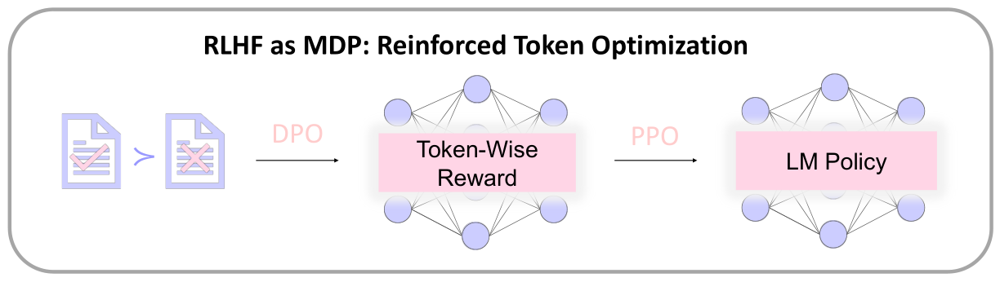
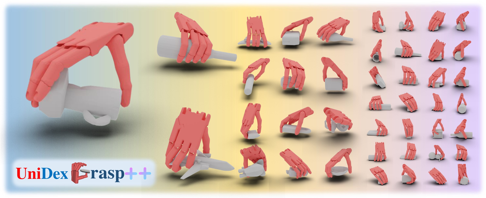
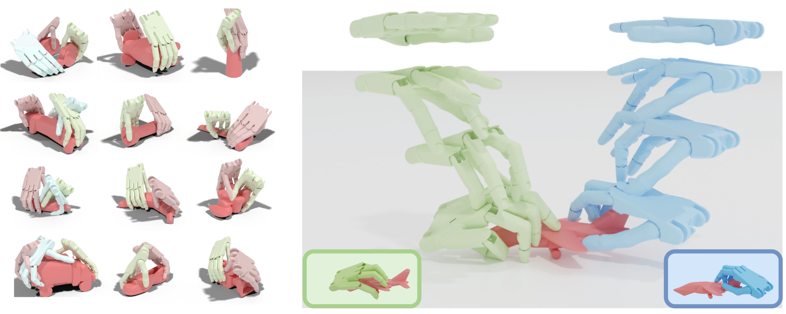

|
Zikang Shan
Email: shanzikang [at] stu.pku.edu [dot] cn
I am a Ph.D. student at Peking University, advised by Prof. Liwei Wang.
Currently, I am also a research intern at Microsoft Research Asia.
Before that, I received my Bachelor's degree from Peking University.
During my undergraduate years, I was honored to be advised by Prof. Liwei Wang and Prof. He Wang.
Feel free to contact me if you want to discuss or collaborate!
Google Scholar |
Github
|
Research
I am interested in reinforcement learning, particularly its application in large language model post-training.
I am also tracking advancements in robotic manipulation.
|
|

|
DPO Meets PPO: Reinforced Token Optimization for RLHF
Han Zhong*, Zikang Shan*, Guhao Feng*, Wei Xiong, Xinle Cheng, Li Zhao, Di He, Jiang Bian, Liwei Wang
Under review, 2024
Paper |
Code
Based on theoretical insights, we propose an RLHF algorithm that is sample efficient and effective.
|
|

|
UniDexGrasp++: Improving Universal Dexterous Grasping via Geometry-aware Curriculum Learning and Iterative Generalist-Specialist Learning
Weikang Wan*, Haoran Geng*, Yun Liu, Zikang Shan, Li Yi, Yaodong Yang, and He Wang
ICCV, 2023
Oral presentation with all top rankings, best paper finalist
Paper |
Website |
Code
We propose an object-agnostic method for learning a universal policy for dexterous object grasping.
|
|

|
UniDexGrasp: Universal Robotic Dexterous Grasping via Learning Diverse Proposal Generation and Goal-Conditioned Policy
Yinzhen Xu*, Weikang Wan*, Jialiang Zhang*, Haoran Liu*, Zikang Shan, Hao Shen, Ruicheng Wang, Haoran Geng, Yijia Weng, Jiayi Chen, Tengyu Liu, Li Yi, and He Wang
CVPR, 2023
Paper |
Website |
Code
We propose a method for dexterous grasping policy learning, handling diverse objects from realistic observations.
|
|